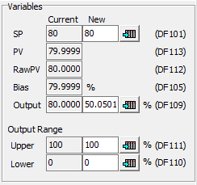

Topic: CL244

| PID Monitor |
Topic: CL244
|
The CLICK PID Monitor is a very useful tool which can be used to help test and tune your PID loops. The PID Monitor gives access to all the PID parameters necessary to tuning a PID Loop. There is a PID chart that displays the SP, PV's, CO and Bias. There is also an Autotune interface that allows you to set up and initiate Autotuning. Alarms can be enabled or disabled while tuning.
The CLICK software must be connected to a CLICK PLC that contains the configured PID Loop.
To open the PID Monitor for a configured PID Loop, from the Menu select Monitor> PID Monitor and select the PID Loop. Alternately, from the Program tab, double-click the PID Loopunder PID Monitor.


The PID Monitor PID Loops may look different above.
PID Monitor not connected to a PLC
If the PID Monitor Icon looks like this, then the CLICK Software is not connected to the PLC. Connect to a CLICK PLC and the Red X will disappear.

PID Loop has a Error
If the PID Monitor Icon has a Red Exclamation mark, then the PID Loop has a error. See PID Error Codes for more information.

This typically occurs if the PID Loop was configured in the PID Configuration, the program was downloaded to the PLC, but the PID Configuration data was not written to the PLC registers. Open the PID Loop Configuration and select Write Register Values to PLC.
When the PID Monitor is opened, the PLC PID Loop values are read from the PLC and displayed in the Current value columns. The New value columns are filled in with the PC project values.

Read and Write buttons
There are three buttons for writing to the PLC and the PC project or reading from the PC project.
Read Project Setting: Reads the settings saved in the PC project and places them in the New value columns. These are the same values configured in the PID Configuration.
Save Current values to Project: Saves all values in the Current value columns (current PLC values) to the project on the PC.
Write all edits to the PLC: Writes all values in the New value columns to the corresponding PLC addresses. Fields with no values will not be written; the PLC values will remain unchanged.
Individual Write buttons
will write only the one value next to it in the New value field to the corresponding PLC address.
Chart
The chart can display the SP, PV's Output, Bias and PV Alarm Limits. The chart layout and pens are configured in the Display Setup tab.
PID Control Tab
The PID Control tab contains the Autotuning interface as well as areas for setting the PID parameters and for adjusting the Set Point and Output variables.
Alarm Setup Tab
The Alarm Setup tab is the same as the PID Configuration Alarm tab. This tab allows you to adjust the alarm settings during tuning as well as test your alarm values and change them if needed.
Display Setup Tab
The Display Setup tab is used to adjust the chart colors, pens, sample rate, X and Y axis labels and divisions.
Error Indicator
The Error Indicator located at the top of the window will indicate a PID Error and provide a list of the current errors.
The PID Loop goes to Manual mode when there is an error. The error indicator will clear when the error is fixed and the loop is placed back into Auto mode.
See PID Error Codes for more information.
Create DataView
Used to create a DataView with all the PID Loop Parameter addresses.
Operation Mode
Current PID Mode: This value can be Auto or Manual and indicates the present mode the PID loop. It is a representation of Cn+25 and Cn+26.
New PID Mode: These radio buttons are used to select the mode of the PID Control, either Auto or Manual. It is a representation of Cn+15 and Cn+16.

Autotune
The loop must be in Auto for the selections under Autotune to be available. See the Autotuning Help topic for more details using the Autotune feature of the software.
Start Tuning (Cn+17) - This button initiates the Autotune process.
Autotune Status (Cn+27) - has two possible values
- Autotune in Progress
- Autotune complete, check PID parameters
Control (Cn+07) - This is the Control Algorithm selection for the Autotune calculation. If PI is selected, then the Derivative Gain will automatically be set to 0.
Hysteresis (DFn+21) - The Autotune Hysteresis is the percentage of the PV Span that the PV will go beyond the SP before the Control Output is changed for the next Autotune bump. If the PV is noisy, it could cross the SP momentarily causing a bad Autotune calculation. The Hysteresis can be 0.1% to 10%.
PID Parameters
The PID Parameters listed can be directly adjusted here by entering them in the New value field and clicking the Write all edits to the PLC button or the individual write buttons

Variables
The necessary parameters for bumping and monitoring the PID Loop are accessible here. The SP, Output and its limits can be directly adjusted here by entering them in the New value field and clicking the Write all edits to the PLC button or the individual write buttons

While in the Monitor mode, you can modify the Alarm configuration. This may be useful to determine new alarm limits, or to disable alarms during the tuning process. See the Alarm section of the PID Configuration Mode topic for details on these settings.

The Display Setup tab is used to configure the Chart view.

Plot Interval
The plot interval can range from 1 second to 60 minutes. When the plot interval is changed and the Apply button is pressed, the PID Monitor chart is cleared.
X-axis
Divisions - This is the number of sections the Chart will display. You can set the Divisions from 1 to 10 divisions viewable on the chart. At the default Zoom setting, each division contains 10 data points. If the Plot Interval is 1 second and Divisions is 5, then the Chart will display 50 seconds of data.
The Zoom buttons can be used to change the points per division from 1 point per division (Zoom in full) to 140 points per division (Zoom out full).
You can choose to display the X-axis grid, which corresponds with the divisions and different X-axis labels: Tick numbers for points, Date and Time.
Y-axis
Divisions are simply dividing the Y-axis into sections and determining where the grid lines will be displayed if enabled.
Scaling
Auto Scale: The minimum and maximum of the Y-axis will automatically be adjusted to the minimum and maximum values displayed on the chart.
Manual Scale: You can choose to set hard min and max limits to display on the chart.
Display
The Display sections lets you choose which available PID pens to show on the chart. You can also select the color for each pen.
Background - choose the background color for the chart that will easily contrast with the pen colors.
Show Point - Turn on and off the point symbols on the chart. The lines on the chart are interpolated between the actual points of data. Sometimes it is useful to see the actual data points